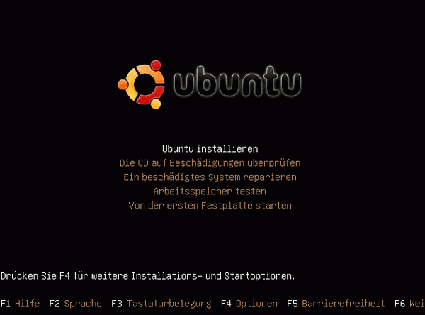
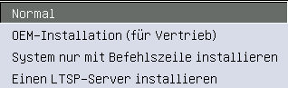

Wiki
Mitmachen
- Wikiartikel anlegen
- Howto anlegen
- Wiki-Referenz
- Wiki-Syntax
- Baustellen
- Artikelideen
- Ungetestete Artikel
- Ausbaufähige Artikel
- Fehlerhafte Artikel
- Rund ums Wiki
Konfiguration
- Backlinks anzeigen
- Exportieren
Alternate Installation Hardy
Archivierte Anleitung
Dieser Artikel wurde archiviert, da er - oder Teile daraus - nur noch unter einer älteren Ubuntu-Version nutzbar ist. Diese Anleitung wird vom Wiki-Team weder auf Richtigkeit überprüft noch anderweitig gepflegt. Zusätzlich wurde der Artikel für weitere Änderungen gesperrt.
Dieser Artikel beschreibt die Installation von Ubuntu 8.04 Hardy Heron mittels der so genannten "Alternate-CD". Im Gegensatz zur Desktop-CD gibt es hier nur eine Text-Installation, dafür hat man mehr Freiheiten. Die Installation unterscheidet sich nur sehr gering von der Alternate-Installation der vorherigen Ubuntu-Versionen wie Gutsy Gibbon, Feisty Fawn etc. Der Boot-Screen sieht anders aus, und bei der Partitionierung gibt es eine weitere Auswahlmöglichkeit.
Vorbereitungen¶
Zuerst sollte die CD heruntergeladen werden. Über den Artikel Downloads sind – nach Auswahl der gewünschten Ubuntu-Version – die Links und weitere Informationen zu finden. Das heruntergeladene CD-Abbild ist mit einem geeigneten Programm auf CD-ROM zu brennen.
Außerdem sollte man prüfen, ob das BIOS das Booten von CD unterstützt und ob die Bootreihenfolge stimmt.
Booten¶
Unmittelbar nachdem der Bootbildschirm erscheint, wird man nach der gewünschten Sprache gefragt. Hier wählt man - üblicherweise - Deutsch. Danach erscheint folgendes Bootmenü:

Die Tastaturbelegung sollte korrekt sein, wenn man als Sprache Deutsch gewählt hat. Für eine normale Installation wählt man einfach den ersten Punkt "Ubuntu installieren".
Mehr Installationsoptionen erhält man durch Drücken von F4 :

Möchte man bestimmte Bootoptionen eingeben (was unter normalen Umständen aber nicht notwendig ist), so muss man F6 drücken.
Hat man die gewünschte Installationsmethode und gegebenenfalls Boot-Optionen gewählt, muss man das Gebiet eingeben, in dem man sich befindet (bei Sprache "Deutsch" also z.B. Deutschland, Österreich, Schweiz usw.). Danach beginnt die Installation.
Ab hier ist die Alternate-Installation mit der von Gutsy Gibbon und älteren Versionen von Ubuntu identisch. Daher kann man ab hier im Artikel Alternate Installation an der Stelle Netzwerk weiter lesen. Lediglich zum Punkt Partitionierung gibt es eine Ergänzung: Hier steht nun die Option verschlüsseltes LVM zur Verfügung. Dies ist fast identisch mit dem Punkt "Gesamtes Laufwerk löschen und LVM verwenden" verschlüsselt jedoch zusätzlich noch die gesamte Festplatte.
Hinweis:
Hat man als Sprache nach dem Booten "English" gewählt, so erscheinen nach der Wahl der Installationsmethode nochmals ein Dialog zur Sprachauswahl sowie einige Dialoge zum Tastaturlayout. Diese sind selbsterklärend.
Diese Revision wurde am 3. Dezember 2013 02:50 von aasche erstellt.
- Erstellt mit Inyoka
-
 2004 – 2017 ubuntuusers.de • Einige Rechte vorbehalten
2004 – 2017 ubuntuusers.de • Einige Rechte vorbehalten
Lizenz • Kontakt • Datenschutz • Impressum • Serverstatus -
Serverhousing gespendet von